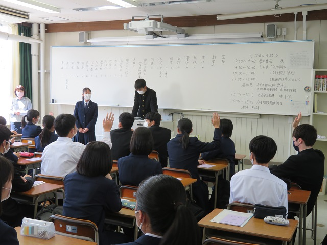
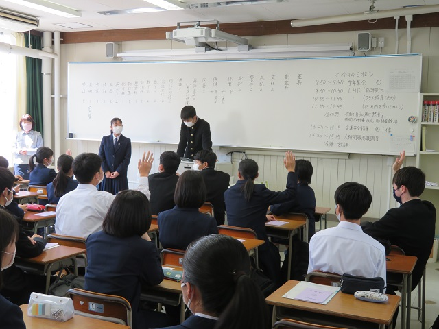

高校総体・高総文祭 壮行会
2022年5月25日 16時03分生徒会執行部が制作した応援動画等を各教室で視聴し、今週末から始まる令和４年度高校総体・高総文祭の壮行会を行いました。

生徒会執行部が制作した応援動画等を各教室で視聴し、今週末から始まる令和４年度高校総体・高総文祭の壮行会を行いました。
今週から教育実習に来られた本校卒業生１１人と３人の先生に、大学の学部学科や大学生活などについて話を伺いました。
５月１３日(金)に英語SDGsポスター表彰式が応接室で行われました。
各教室でスライドを映し、執行部員が放送する形で、令和４年度前期生徒総会を行いました。
本日、１年生を対象に、SNSにおけるモラル・マナー講習会を開催しました。
昨日、前期生徒会長選挙が行われ、投開票の結果、２年生の三好優智さんが創立１００周年を記念する令和４年度前期生徒会長に信任されました。
本日、１年生は遠足で因幡万葉歴史館前の広場まで行き、クラス対抗レクリエーション大会をするなどして、クラスの親睦を深めました。
昨日から３日間、生徒会執行部員や先生方が学校周辺の通学路や正門、生徒玄関等に立ち、あいさつ運動や自転車運転の交通指導をしています。
本日の１年生の様子です。
クラスごとに学校敷地内の案内や、クラス役員の選出がありました。


 
